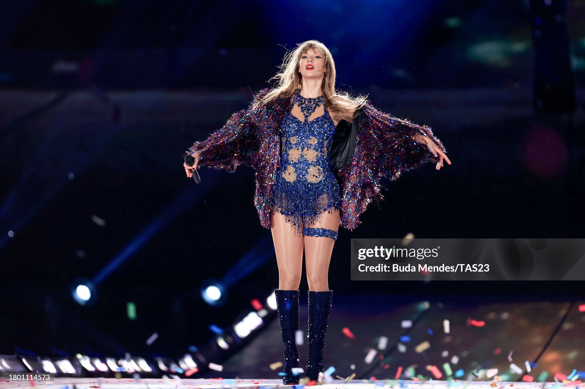
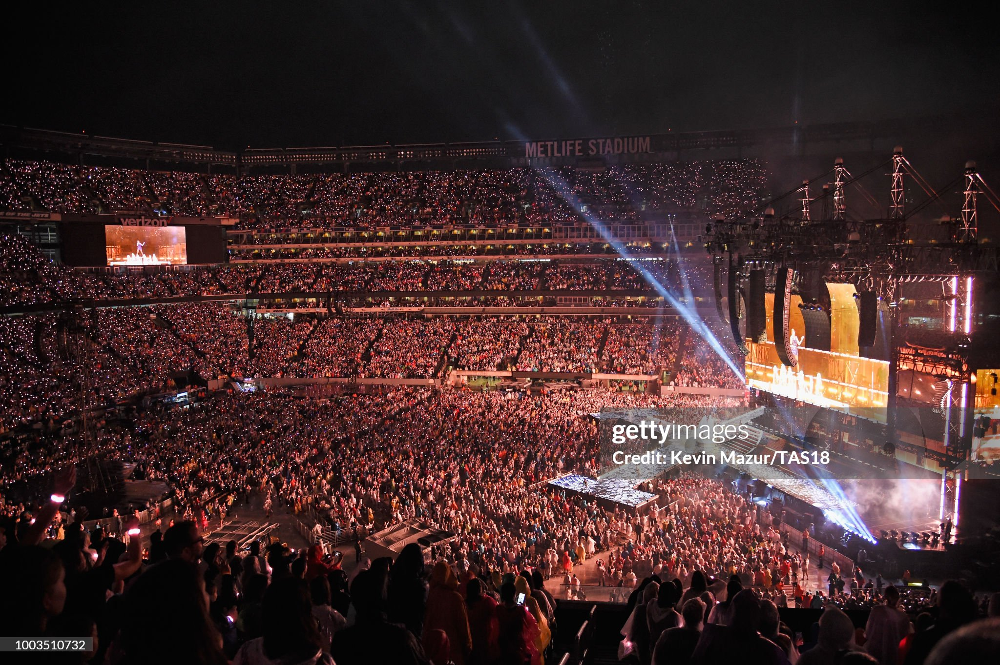

Veja abaixo a lista das turnês de maior sucesso da cantora norte-americana Taylor Swfit
The Eras Tour
Ainda em andamento, a The Eras Tour já é considera a maior turnê de uma artista feminina, superando nomes como
Beyoncé e Lady Gaga. O espetáculo tem aproximadamente 3 horas de duração e a cantora performa sucesso de todos os seus
albúns já lançados, desde o Debut até o Midnights, seu último álbum. Obtendo, até o momento, um faturamento de US$ 1,04
bilhão (aproximadamente R$ 5,16 bilhões), Taylor se consagra como a artista feminina com a turnê mais rentável da
história da música. Vale ressaltar que a turnê ainda passará por mais países e se encerrará no mês de dezembro do ano de
2024

Reputation Stadium Tour
A penúltima turnê da cantora, a Reputation Stadium Tour, também teve muito destaque. Tendo início em 2018, passou por
vários países e teve um total de 53 shows, todos eles com ingressos esgotados. Se tornou a turnê mais rentável da
década e a segunda maior turnê feminina de todos os tempos. De acordo com o boxscore da turnê, a cantora se apresentou,
combinando todos os shows, para 2.888,918 milhões de pessoas e arrecadou ao todo 345.508,462 milhões de dólares.

1989 World Tour
A turnê 1989 World Tour também teve seus destaques. Taylor conseguiu esgotar todos os ingressos das 83 datas anunciadas,
vendendo um total de 2.278,647 mil ingressos. O show no ANZ Stadium, em Sydney, na Austrália, se consagrou como o maior
de sua carreira, com 76 mil presentes em uma única noite. Segundo a Bilboard, a turnê faturou no total $250,733 milhões,
o que a tornou a segunda mulher que mais arrecadou com turnês na história, ficando atrás apenas de Maddona, com $1.34
bilhões.